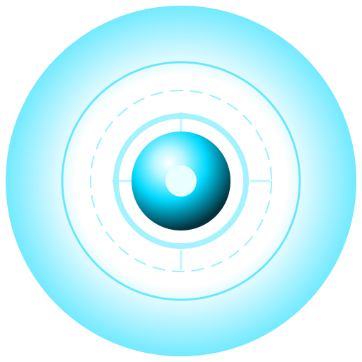

CPU—
—
Native system telemetry
Your desktop, connected.
Waiting for desktop telemetry...
Analyzing live desktop telemetry and agent status.
JARVIS checks local health without Sarvam or Ollama. No fix runs automatically.
Waiting for live worker telemetry...
Ready to create varied, runnable coding experiments during idle time.
Loading memory...
No memories loaded.
Adjust JARVIS behavior and preferences.
Normal chat uses Sarvam AI. Commands and desktop actions stay on this computer. Ollama is available separately as a local model.
Checking local Ollama… Checking local speech… Local profile and saved knowledge remain available offline.Choose Sarvam, Grok, or a local Ollama model. Remote API keys stay encrypted on this device or can be supplied through the provider environment variables.
When Sarvam answers, JARVIS sends your current prompt, up to the selected number of recent user/assistant messages, and the assistant instructions needed to answer. Clearing recent context does not delete the visible chat transcript or saved profile facts.
ollama pull gemma3:4bAdd a Google Programmable Search API key and search engine ID to include Google in permission-approved learning. Without these, JARVIS uses Wikipedia only. Values stay in this app's local storage.
Place your reference WAV at: voices/jarvis_reference.wav
Loading...
Loading files...
Created PPTX, PDF, Excel, Word, CSV and ZIP files.
Your apps, ideas and everyday work. One place to get things done.
Ask in Hindi or English. Open your apps, create a document, or work through an idea.
Discovering your installed apps…
Live readings from your device. Unavailable readings are never estimated.
Awaiting command input.
SYSTEM OFFLINE

—
—
CHECKING
Your words appear in the Chat dashboard, where you can review the full conversation.